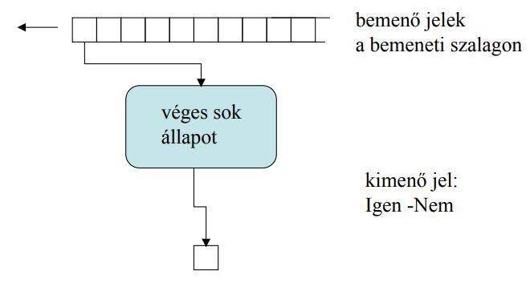
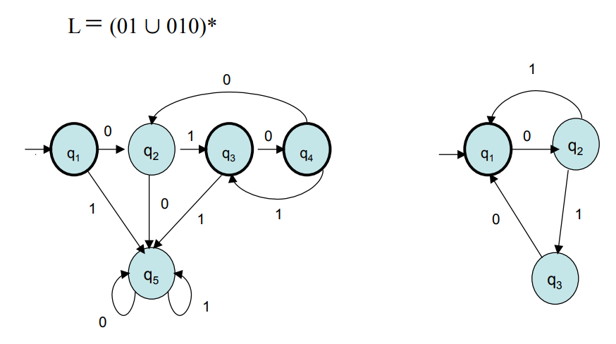
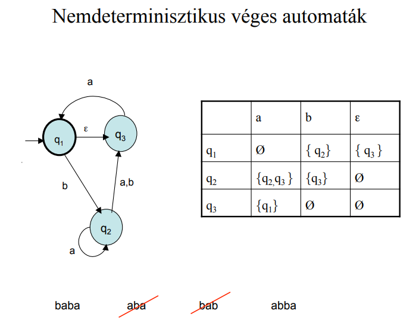
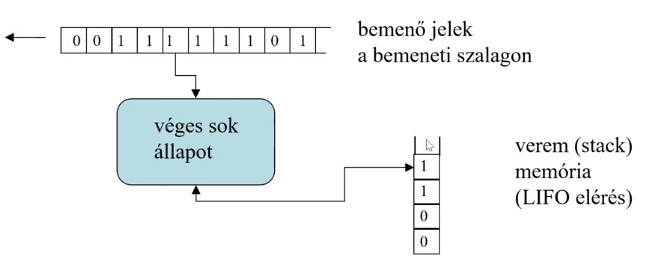
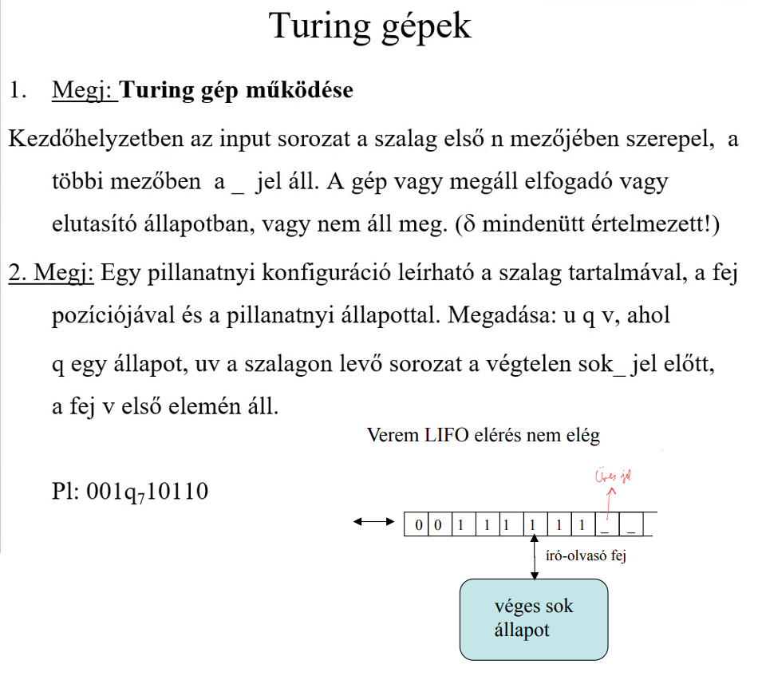
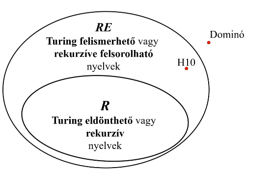
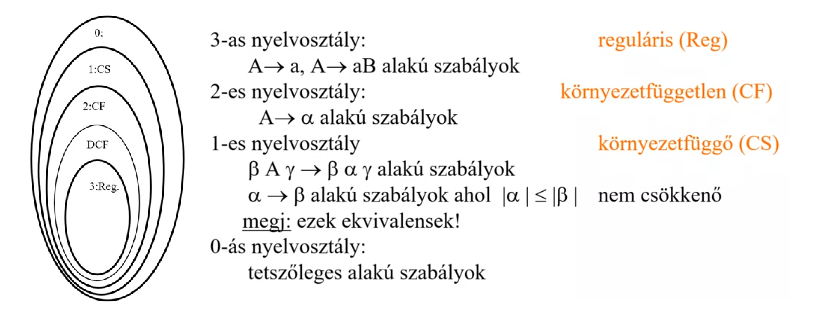
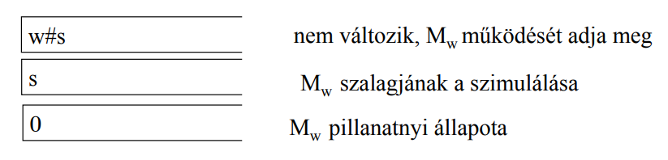
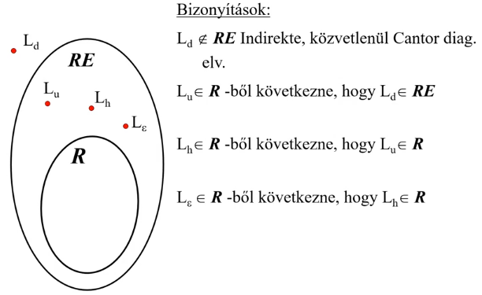

Reguláris kifejezések, reguláris nyelvek. Determinisztikus és nemdeterminisztikus véges automata fogalma, ekvivalenciájuk. Reguláris nyelvek felismerése automatával. Egy reguláris nyelvet felismerő minimális dva.
Reguláris és CF nyelvek jellemzése a megfelelő pumpáló lemmával.
Környezetfüggetlen grammatikák, egyértelmű ill. többértelmű CF grammatika, Chomsky-féle normálalak, BNF. Műveletek CF nyelveken. Verem automata, kapcsolata CF nyelvekkel.
Turing gép, ekvivalens fajtái. Rekurzív és rekurzíve felsorolható nyelvek, számosságuk. Példa rekurzíve felsorolható, de nem rekurzív nyelvre, illetve nem rekurzíve felsorolható nyelvre. Turing-gépek és nyelvtanok kapcsolata.
Church-Turing tézis, példa algoritmikusan nem eldönthető problémára. TG kódja, az univerzális TG fogalma, használata.
Algoritmusok (TG-ek) idő és tárigénye. A P nyelvosztály jellemzése, zártsága nyelvek feletti műveletekre. Nevezetes P-beli problémák. Tár-idő tétel. A P, NP, PSPACE, EXPTIME és a co operátorral kapott nyelvosztályok, ezek tartalmazási viszonyai.
Az NP nyelvosztály jellemzése, nevezetes NP-beli nyelvek, tanúkkal. Az NP- teljes nyelvek jellemzése. Nevezetes NP-teljes problémák.
Ábécé (Σ): Véges, nemüres szimbólumhalmaz. Szó: Az ábécé elemeinek véges sorozata. Az üres szót ε-nal jelöljük. Σ*: Az ábécé feletti összes szó halmaza.
Definíció:L egy formális nyelv Σ felett, ha L ⊆ Σ*.
Egy nyelv végesen megadható: a) Elemeit felsorolva – ha azok száma véges. b) L = {w ∈ Σ* | w P tulajdonságú} c) L = L(M), ahol M egy automata (pl. DVA). d) Operátorokkal (unió, konkatenáció, Kleene-csillag stb.). e) Generáló nyelvtannal.
Megjegyzés: Nem lehet az összes Σ feletti nyelvet végesen reprezentálni!
Formális nyelvek megadási módjai
Felsorolás: A nyelv szavainak explicit felsorolása (csak véges nyelvekre).
Tulajdonság megadása: L = {w ∈ Σ* | w rendelkezik P tulajdonsággal}
Generatív grammatika: Szabályrendszer, amely generálja a nyelv szavait.
Felismerő automata: Olyan gép, amely eldönti, hogy egy szó benne van-e a nyelvben.
Reguláris kifejezés: Speciális jelölésrendszer (reguláris nyelvekre).
Generatív grammatika
Definíció: Egy G = (V, Σ, R, S) négyes generatív grammatika, ahol:
• V egy véges halmaz, a grammatikai változók vagy nemterminálisok halmaza,
• Σ egy véges halmaz, diszjunkt V-vel, a terminálisok halmaza,
• R egy véges halmaz, a levezetési szabályok halmaza, ahol egy levezetési szabály alakja
α → β
ahol α és β terminálisok és nemterminálisok tetszőleges sorozata, de α-ban kell legyen egy nemterminális,
• S ∈ V a kezdő- vagy mondatszimbólum.
Levezetés (deriváció)
Egy szóforma közvetlenül levezethető egy másikból (jelölés: ⇒), ha egyetlen szabály alkalmazásával megkapható. A levezetés tranzitív lezártját ⇒* jelöli.
Példa: A {0i1i | i > 0} nemreguláris nyelv nyelvtana G = ({S}, {0,1}, {S → 0S1, S → 01}, S)
S → 0 S 1
S → 0 1
levezetési szabályok
terminálisok (a nyelv abc-je)
grammatikai változók vagy nemterminális jelek
a kezdő szimbólum: egy kitüntetett nemterminális jel
Levezetés (i=4): S ⇒ 0S1 ⇒ 00S11 ⇒ 000S111 ⇒ 00001111
Ez a grammatika az L = {0n1n | n ≥ 1} nyelvet generálja (CF, de nem reguláris).
L(G): Azon terminális szavak halmaza, amelyek levezethetők a kezdőszimbólumból:
L(G) = {w ∈ Σ* | S ⇒* w}
Definíció (Közvetlen levezetés): Egy G = (V, Σ, R, S) grammatika alapján a κ ∈ (V∪Σ)* szóból közvetlenül levezethető a µ ∈ (V∪Σ)* szó, ha léteznek olyan γ, δ ∈ (V∪Σ)* szavak és α → β szabály R-ben, hogy:
κ = γ α δ, µ = γ β δ.
Jelölés: κ ⇒G µ vagy κ ⇒ µ
Definíció (Levezetés): Tetszőleges u és v ∈ (V∪Σ)* szavak esetén azt mondjuk, hogy v levezethető u-ból a G = (V, Σ, R, S) grammatika alapján, ha u = v, vagy léteznek n ≥ 1 és u = w1, …, wn = v szavak úgy, hogy:
w1 ⇒G w2 ⇒G … ⇒G wn.
Jelölés: u ⇒*G v vagy u ⇒* v
Definíció (Generált nyelv): A G = (V, Σ, R, S) grammatika generálja az L ⊆ Σ* nyelvet, ha L = L(G), ahol:
L(G) = { w ∈ Σ* | S ⇒* w }
a G grammatika által generált nyelv.
Definíció (Ekvivalencia): A G és G' grammatikák ekvivalensek, ha L(G) = L(G').
Chomsky-féle nyelvosztályok
Chomskyféle nyelvosztályok és kapcsolatok az automatatípusokkal. 0s nyelvtanok ekvivalenciája a
Turinggépekkel.
0. típus (Rekurzíve felsorolható nyelvek)
Szabály: α → β, ahol α ∈ (N ∪ Σ)⁺, β ∈ (N ∪ Σ)*. Nincs megszorítás. Felismerő: Turing-gép.
1. típus (Környezetfüggő nyelvek)
Szabály: α → β alakú szabályok, ahol |α| ≤ |β| (nem csökkenő szóhossz). Ekvivalens alak: αAβ → αγβ, ahol A ∈ N, γ ∈ (N ∪ Σ)⁺. Felismerő: Lineárisan korlátozott automata (LBA).
2. típus (Környezetfüggetlen / CF nyelvek)
Szabály: A → γ, ahol A ∈ N, γ ∈ (N ∪ Σ)*. A bal oldal egyetlen nemterminális. Felismerő: Veremautomata (PDA).
3. típus (Reguláris nyelvek)
Jobblineáris: A → wB vagy A → w. Ballineáris: A → Bw vagy A → w. Felismerő: Véges automata (DFA, NFA).
Chomsky-hierarchia:
3. típus ⊂ 2. típus ⊂ 1. típus ⊂ 0. típus
(Reguláris ⊂ CF ⊂ Kontextusfüggő ⊂ Rekurzíve felsorolható)
Példák az elhatárolásra:
• L = {aⁿbⁿ | n ≥ 0} — CF, de nem reguláris
• L = {aⁿbⁿcⁿ | n ≥ 0} — kontextusfüggő, de nem CF
• Turing-gép megállási problémája — rekurzíve felsorolható, de nem rekurzív
Definició : Egy Σ abc feletti reguláris kifejezések
1. Σ minden eleme.
2. ε (üres szó)
3. ∅ (üres nyelv)
4. Ha α és β reguláris kifejezések, akkor (αβ) is az.
5. Ha α és β reguláris kifejezések, akkor (α∪β) is az.
6. Ha α reguláris kifejezés, akkor α* is az.
Minden reguláris kifejezés reprezentál egy nyelvet.
Definíció:Egy nyelv reguláris, ha definiálható reguláris kifejezéssel.
Tétel: Legyen ℒ azon nyelvek halmaza, melyek felismerhetők determinisztikus véges automatával.
ℒ zárt a reguláris operátorokra nézve.
Azaz ha A₁ ∈ ℒ és A₂ ∈ ℒ, akkor:
A₁ ∪ A₂ ∈ ℒ.
A₁ ∘ A₂ ∈ ℒ.
A₁* ∈ ℒ.
Determinisztikus véges automata (DFA)

Definíció: Determinisztikus véges automata (dva vagy va)
M = (Q, Σ, δ, q₀, F) ahol:
Q, egy véges halmaz az állapotok halmaza
Σ, egy véges halmaz az abc
δ: Q × Σ → Q az állapotátmenet függvény
q₀ ∈ Q a kezdeti állapot
F ⊆ Q a végállapotok halmaza
Definíció: Felismert (elfogadott) jelsorozat
M = (Q, Σ, δ, q₀, F) egy DVA, w = x₁x₂…xₙ Σ-beli jelek sorozata.
M felismeri w-t, ha ∃ r₀r₁…rₙ Q-beli állapotok sorozata, hogy:
r₀ = q₀
δ(ri, xi+1) = ri+1 i = 0,…,n−1
rₙ ∈ F
Definíció: Az M dva által felismert nyelv
Az M DVA felismeri az L nyelvet, ha
L = {w | M felismeri w-t}
Jelölés: Az M által felismert nyelv: L(M)
Nemdeterminisztikus véges automata (NFA)

Azaz olyan automata, amelyben egy adott állapotból egy adott bemenő jelre több átmenet is lehet. Szóval az automata bármikor megsokszorazhatja magát.
Definíció: Az N nva által felismert nyelv
Az N NVA felismeri az L nyelvet, ha
L = {w | N felismeri w-t} ( azaz azon szavakból áll amiket elfogad az automata )

Reguláris nyelvek felismerése automatával ????
Következmény (LR = LN = LD): Az alábbi Σ feletti nyelvosztályok megegyeznek:
1. LR — a reguláris nyelvek halmaza (reguláris kifejezésekkel megadható)
2. LN — az NVA-k által felismert nyelvek
3. LD — a DVA által felismert nyelvek
Ekvivalenciájuk
Definíció (Automata-ekvivalencia): M₁ és M₂ (két automata) ekvivalensek, ha L(M₁) = L(M₂). (ha ugyanazon nyelvet ismerik fel)
( Determinisztikus véges automata kevesebb nyelvet ismer fel, mint nemdeterminisztikus véges automata, de minden determinisztikus véges automata által felismert nyelvet felismer egy nemdeterminisztikus véges automata is.)
Tétel: Legyen ℒ azon nyelvek halmaza, melyek felismerhetők determinisztikus véges automatával. (vagy nem det. véges automatával, hisz részhalmaza)
ℒ zárt a reguláris operátorokra nézve.
Azaz ha A₁ ∈ ℒ és A₂ ∈ ℒ, akkor:
A₁ ∪ A₂ ∈ ℒ.
A₁ ∘ A₂ ∈ ℒ.
A₁* ∈ ℒ.
Ezeket bizonyítani nem det. véges automata segítségével szokták, mert könnyebb a konstrukció.
Következmény (LR = LN = LD): Az alábbi, valamely adott Σ feletti nyelvosztályok megegyeznek:
1. LR — a reguláris nyelvek halmaza (reguláris műveletekkel / kifejezésekkel megadható).
2. LN — az NVA-k által felismert nyelvek.
3. LD — a DVA által felismert nyelvek.
Megjegyzés: LR ⊆ LN , és LN = LD. Mert minden reguláris kifejezés konvertálható NVA-vá, és minden NVA szimulálható ekvivalens DVA-val a részhalmaz-konstrukcióval.
δ: (Q ∖ {qvég}) × (Q ∖ {qkezdő}) → R az állapotátmenet-függvény,
ahol R a Σ feletti reguláris kifejezések halmaza
qkezdő ∈ Q — a kezdeti állapot
qvég ∈ Q — a végállapot
Az ÁNVA szerkezeti tulajdonságai:
Az élek reguláris kifejezésekkel címkézettek.
A qkezdő-ból minden más állapotba megy él, de qkezdő-ba egy sem vezet vissza.
Egyetlen, a qkezdő-tól különböző végállapot (qvég) van, és qvég-ből nem indul él.
A közbülső állapotok mindegyikéből megy egyetlen él minden közbülső állapotba, így saját magába is (önhurok).
Definíció (Felismert jelsorozat): N = (Q, Σ, δ, qkezdő, qvég) egy ÁNVA. N felismeri a w ∈ Σ* sorozatot, ha w = w₁w₂…wk, ahol wi ∈ Σ*, és ∃ r₀, r₁, …, rk Q-beli állapotsorozat, amelyre:
r₀ = qkezdő
rk = qvég
wi ∈ L(Ri), ahol Ri = δ(ri−1, ri), i = 1,…,k
Definíció: N felismeri az L nyelvet, ha L = {w | N felismeri w-t}.
Egy reguláris nyelvet felismerő minimális dva
Definíció : Legyen L (nyelv) ⊆ Σ* (ábécé) egy nyelv. x, y (stringek) ∈ Σ* L-re nézve ekvivalensek, ha ∀ z ∈ Σ* esetén igaz, hogy:
xz ∈ L ⟺ yz ∈ L.
Jelölés: x ≈L y. Ez egy ekvivalencia reláció Σ*-on.
Példa: L = (ab∪ba)* esetén a Σ* ≈L szerinti ekvivalencia osztályai:
[ε] = L (üres string része a nyelvnek)
[a] = La (a-hoz hozzákonketenálom a nyelvet)
[b] = Lb
[aa] = L(aa∪bb)Σ*
Definíció (Konfiguráció): Legyen M = (Q, Σ, δ, q₀, F) DVA.
(r, x) ∈ Q × Σ* az M egy konfigurációja (r = állapot, x = bemeneti sztring).
Definíció (Rákövetkező konfiguráció): Legyen M = (Q, Σ, δ, q₀, F) DVA, (r, x) egy konfiguráció. (r, x) rákövetkezője az (r', x') konfiguráció, ha:
x = ax', ahol a ∈ Σ, (x-ből olvasom a stringet)
δ(r, a) = r'. (akkor r' az új állapot.... i'm just tired man )
Jelölés: (r, x) ⊢M (r', x').
ööööööööö.... Definíció (Elérhetőség): (r, x) ⊢*M (r', x'), azaz (r, x)-ből (r', x') elérhető, ha
(r, x) ⊢M (r₁, y₁) ⊢M … ⊢M (r', x') valamely k ≥ 0 lépésben.
(Definiálunk egy automatát megint.. hogy most egy ekvivalet definiálunk egy automatára nézve. Az elöző egy nyelve nézve volt. )
Definíció (∼M reláció): Legyen M = (Q, Σ, δ, q₀, F) DVA. x, y ∈ Σ* M-re nézve ekvivalensek, ha ∃ q ∈ Q, hogy
ez egy konf -> (q₀, x) ⊢*M (q, ε) és (q₀, y) ⊢*M (q, ε). (ugyanabba az állapotba érnek, hiába más a konfig)
Jelölés: x ∼M y. Ez ekvivalencia reláció Σ*-on. Jelölés: Minden q elérhető állapothoz tartozó ekvivalencia osztály: [q].
Tétel: Legyen M = (Q, Σ, δ, q₀, F) DVA. Ekkor ∀ x, y ∈ Σ* esetén:
x ∼M y ⟹ x ≈L(M) y
( HA x és y string ekvivalensek az automatára nézve, akkor x és y ekvivalensek a felismert nyelvre nézve.
Azaz ha x és y ugyanabba az állapotba jutnak, akkor ugyanaz a sorsuk a nyelvben is, vagyis mindkettő benne van, vagy egyik sem.)
Tétel : Ha L ⊆ Σ* reguláris nyelv, akkor ∃ M = (Q, Σ, δ, q₀, F) DVA (automata), hogy L(M) = L (L nyelvet ismeri fel), és állapotainak száma éppen az ≈L reláció által meghatározott ekvivalencia osztályok száma. M az állapotainak számozásától eltekintve egyértelmű.
Tehát létezik mindig minimális automata. (és annyi állapota van, ahány ekvivalencia osztály van a nyelvre nézve)
Következmény : L ⊆ Σ* reguláris ⟺ az ≈L reláció által meghatározott ekvivalencia osztályok száma véges.
3. Téma
Pumpáló lemmák reguláris és CF nyelvekre
Reguláris pumpáló lemma
Tétel (Pumpáló lemma — reguláris):Ha L ⊆ Σ* egy reguláris nyelv, akkor ∃ p ∈ N szám, hogy
∀ s ∈ L esetén, ha s hossza leglább p, akkor s felbontható
s =xyz alakba úgy, hogy:
xyiz ∈ L ∀ i ≥ 0 (van egy olyan résztrink ami iterálható)
|y| > 0 (van mit iterálnunk)
|xy| ≤ p (az iterálható rész a szó elején van)
Példa — L = {0n1n | n ≥ 0} nem reguláris:
Legyen p a pumpáló hossz. Válasszuk w = 0p1p ∈ L. Ekkor |xy| ≤ p, tehát y = 0k, k ≥ 1.
xy2z = 0p+k1p ∉ L — ellentmondás. ∴ L nem reguláris.
CF nyelvek jellemzése pumpáló lemmával
Elégséges feltétel, nem szükséges !!! Csak bizonyításra használható Tétel (Pumpáló lemma — CF): Ha L ⊆ Σ* egy CF nyelv, akkor ∃ p ∈ ℕ szám, hogy ∀ s ∈ L esetén, ha |s| ≥ p, akkor s felbontható s = uvxyz alakba úgy, hogy:
uvnxynz ∈ L minden n ≥ 0 esetén, (benne van a nyelvben minden elem)
|vy| > 0, (van mit iterálnunk)
|vxy| ≤ p. (vhol a közepén van a pumpálható rész)
Példa — L = {anbncn | n ≥ 0} nem CFL:
Legyen p a pumpáló hossz. Válasszuk w = apbpcp.
|vxy| ≤ p, tehát vxy legfeljebb két szimbólumtípust tartalmaz.
uv2xy2z-ben az a, b, c darabszámok nem lehetnek egyenlők — ellentmondás. ∴ L nem CF.
Megjegyzés: Mindkét lemma szükséges, de nem elégséges feltételt ad a reguláris/CF tulajdonságra. A lemmák tagadásával igazolható, hogy egy nyelv nem tartozik az osztályba. Ha L kielégíti a lemmát, attól még nem biztos, hogy reguláris ill. CF.
Definíció (CF grammatika):G = (V, Σ, R, S) grammatika környezetfüggetlen, ha a
levezetési szabályainak bal oldalán egyetlen nemterminális
szerepel, azaz a szabályok
A → β (β az egy tetszőleges nemterminálisok és terminálisokból álló sorozat)
alakúak, ahol A ∈ V, β ∈ (V∪Σ)*
Megjegyzés 1: A szabályokkal megadott CF grammatikában a nemterminálisokat nagybetűkkel, a terminálisokat kisbetűkkel jelöljük.
Megjegyzés 2: A kezdőszimbólum az első szabály bal oldalán szerepel (megállapodás).
Megjegyzés 3: Az A → β | γ | δ forma gazdaságos szabályösszevonás.
1. Példa: G = ({S}, {a, b}, R, S), és R = { S → aSb | SS | ε }
∈ L(G): abab aaabbb aababb ∉ L(G): baba aba bab abba
Egy reguláris nyelv környezetfüggetlen-e?
Tétel: Igen.
Egyértelmű-e mindig egy CF grammatika szerinti levezetés?
Válasz: Nem mindig, mert a szabályok alkalmazásának sorrendje tetszőleges lehet.
Levezetési fa
Definíció: Egy CF G grammatika szerinti levezetés olyan fával ábrázolható, melynek gyökere a kezdőszimbólum, levelei balról jobbra a levezetett szó betűi, további csomópontjai nemterminálisok, és az elágazások egy-egy alkalmazott szabálynak felelnek meg. Ez a levezetési fa.
Egyértelmű és többértelmű CF grammatika
Definíció: Egy környezetfüggetlen grammatika szerinti levezetés baloldali, ha a levezetés egyes lépéseiben a legbaloldalibb nemtermimálist helyettesítjük be.
Definíció: Egy nyelvtan egyértelmű, ha minden generált szavának egyetlen baloldali levezetése van. Különben többértelmű. Egy CF nyelv egyértelmű, ha van őt generáló egyértelmű nyelvtan.
Megj: Minden baloldali levezetés meghatároz egy levezetési fát. Tehát egyértelmű nyelvtan esetén minden generált szóhoz egyetlen levezetési fa létezik.
Egyértelmű-e mindig egy CF grammatika szerinti baloldali levezetés?
Válasz: Nem mindig.
Egyértelmű-e minden CF nyelv?
Válasz: Nem.
Példa: Az L = {aibjckdl : i=k vagy j=l} nem egyértelmű.
Chomsky-féle normál alak (CNF)
Definíció: A G = (V, Σ, R, S) CF grammatika Chomsky-féle normálalakban adott, ha a szabályok az alábbi alakúak:
A → BC (nemterminálisok A, B, C )
A → a ( a terminális )
S → ε ( kezdő üres szó )
ahol A, B, C ∈ V, a ∈ Σ, B és C nem kezdőszimbólumok.
Tétel: Legyen ℒ a CF nyelvek halmaza. ℒ zárt a reguláris operátorokra nézve. Azaz ha A1 ∈ ℒ és A2 ∈ ℒ, akkor:
1. A1 ∪ A2 ∈ ℒ.
2. A1 ∘ A2 ∈ ℒ.
3. A1* ∈ ℒ.
Tétel: Legyen ℒ a CF nyelvek halmaza.
ℒ nem zárt a metszetre nézve.
ℒ nem zárt a komplementerre nézve.
Tétel: Ha A1 CF nyelv, A2 reguláris nyelv, akkor A1 ∩ A2 CF nyelv.
Verem automaták

DVA nem alkalmas CF nyelv felismerésére .. Ezért :
Σ, egy véges halmaz a bemeneti abc (balról jobbra olvassuk)
Γ, egy véges halmaz a verem abc (LIFO)
δ: Q × Σε × Γε → P(Q × Γε) az állapotátmenet függvény
(Γε ez a nem csinálunk semmit, ezzel lényegében átugrunk egy karaktert és mint ezt nem determinisztikus módon kezeljük. Elágazhat a cselekedetünk, veremmel is többféle dolgot csinálhatunk és a fejjel is )
Definíció: Felismert (elfogadott) jelsorozat
M = (Q, Σ, Γ, δ, q0, F) egy verem automata, w = w1w2...wn Σε-beli jelek sorozata.
M felismeri w-t, ha ∃:
r0r1...rn Q-beli állapotok sorozata, és
s0s1...sn Γε-feletti szavak sorozata, hogy:
r0 = q0 és s0 = ε
(üres karakterlánc a kezdő helyzetben)
(ri+1, b) ∈ δ(ri, wi+1, a) i = 0,...n−1, ahol: si = at és si+1 = bt valamely a,b ∈ Γε és t ∈ Γ*
rn ∈ F
(rn az elfogadó állapotok egyike)
Definíció: M verem automata felismeri az A nyelvet, ha A = {w | M felismeri w-t}.
G (grammatika) = a szabályok — leírja, hogyan lehet szavakat előállítani. Pl. S → aSb | ε L (nyelv) = a szavak halmaza — az összes szó, amit G generál. Pl. {aⁿbⁿ | n ≥ 0} M (verem automata) = gép, ami szavakat olvas és elfogad/elutasít
Tétel: Minden L CF nyelvhez létezik őt felismerő verem automata.
Tétel: Minden M verem automatához létezik G CF grammatika, mely éppen az M által felismert nyelvet generálja. (CF generálható verem autómatával)
Következmény: A verem automaták által felismert nyelvek = CF nyelvek.
5. Téma
Turing-gép, rekurzív és rekurzíve felsorolható nyelvek

Turing-gép (TG)
Definíció: Turing gép
M = (Q, Σ, Γ, δ, q0, qelfogad, qelutasít) ahol:
Q, egy véges halmaz az állapotok halmaza (jelenlegi állapotok)
Σ, egy véges halmaz a bemeneti abc, mely nem tartalmazza a _ jelet
Γ, egy véges halmaz a szalag abc, ahol _ ∈ Γ és Σ ⊆ Γ (h mit olvas a fej)
1. Megj: Turing gép működése: Kezdőhelyzetben az input sorozat a szalag első n mezőjében szerepel, a többi mezőben a _ jel áll. A gép vagy megáll elfogadó vagy elutasító állapotban, vagy nem áll meg. (δ mindenütt értelmezett!)
2. Megj: Egy pillanatnyi konfiguráció leírható a szalag tartalmával, a fej pozíciójával és a pillanatnyi állapottal. Megadása: u q v, ahol q egy állapot, uv a szalagon levő sorozat a végtelen sok _ jel előtt, a fej v első elemén áll.
Definíció: M Turing gép elfogad egy w sorozatot, ha ∃:
C1 C2 ... Cn konfigurációk sorozata, hogy:
C1 a kiindulási konfiguráció,
Ci rákövetkezője Ci+1, i = 1,...n−1,
Cn elfogadó konfiguráció. (szóval ha valaha is elfogadó állapotba jut. Azon sorozatok halmaza amit TG elfogad, az TG felismerhető)
Jelölés: L(M) jelöli az M Turing gép által elfogadott sorozatok halmazát. Ez a gép által felismert nyelv.
Turing gép változatok
Kényelmesebbek, de nem képesek többre, mint az alap TG: ugyanazokat a nyelveket ismerik fel.
Definíció: M és S Turing gép változatok ekvivalensek, ha L(M) = L(S).
Több szalag (TSZ TG):
δ: Q × Γk → Q × Γk × {J, B}k.
- Szimulálható egyetlen szalaggal.
Nemdeterminisztikus TG (ND TG):
δ: Q × Γ → P(Q × Γ × {J, B}).
- A ND TG működését fa írja le. Ha egy ágon az elért állapot elfogadó, akkor a ND TG elfogadta a kezdeti sorozatot. Minden ND TG-hez van vele ekvivalens (determinisztikus) TG.
- Tudjuk szimulálni DT TG -vel.
Felsoroló TG: Nincs bemeneti sorozat,
δ: Q × Γ → (Q × Γ × {J, B} × Σ*).
- Egy L nyelvet felsoroló E TG-hez létezik egy N TG, mely éppen L-et ismeri fel, és viszont.
További példák : két irányban végtelen szalag, 2 dimenziós szalag, több fej, több elutasító és elfogadó állapot, RAM (random access machine), Kétvermes automata, kétszámlálós gép
Rekurzíve felsorolható és rekurzív nyelvek
Azt érdemes tudni, hogy megszámlálhatóan sok TG van, de a TG által felismert nyelvek száma nem megszámlálhatóan sok (ugye TG az rekurzíve felsorolható), tehát vannak olyan nyelvek, melyeket nem ismer fel egyetlen TG sem. Ezért érdemes megkülönböztetni a Turing felismerhető és a Turing eldönthető nyelveket. (rekurzíve felsorolható és rekurzív nyelvek)
Definíció: Egy L ⊆ Σ* nyelv Turing felismerhető vagy rekurzíve felsorolható, ha van olyan M Turing gép, melyre L(M) = L.
Megj: s ∈ Σ* \ L esetén nem biztos, hogy megáll a gép, így csak az L elemeire kapunk igenlő választ. (ha végtelen ciklusba kerűl egy TG akkor nem lesz egy szó felismerhető)
( Rekurzíve felsorolható nyelvben, igen az véges időn belűl kapunk választ, de ha vmi nem felismerhető, akkor végtelen ciklusba kerül, vagy megkapjuk véges időn belűl )
Definíció: Egy L ⊆ Σ* nyelv Turing eldönthető vagy rekurzív, ha van olyan M Turing gép, melyre L(M) = L, és M minden s ∈ Σ* szóra megáll.
( Rekuzív nyelvben, igen is nem is véges időn belűl megkapjuk a választ, tehát minden szóra megáll a gép )
Megj: Minden rekurzív nyelv rekurzíve felsorolható is. (Az érdekes kérdés a fordított tartalmazás, amiről később belátjuk, hogy nem áll fenn.)
Tétel: Ha L rekurzív, akkor LC (komplementere) is az. Biz: Ha L(M) = L, akkor M-ben az elfogadó és elutasító állapotot felcserélve, az így kapott M' TG-re L(M') = LC.
Nem Turing-felismerhető nyelv létezése
Tétel: Van olyan L' ⊆ Σ* = {0,1}* nyelv, amely nem Turing felismerhető, azaz nem rekurzíve felsorolható.
Biz: Egy TG leírható véges jelsorozattal. Az összes TG felsorolható, mivel k hosszú jelsorozattal megadott TG véges sok van. Legyen M1, M2, ...Mn, ... egy felsorolásuk. Az Mi TG egyértelműen meghatározza az általa felismert Li nyelvet, így a Turing felismerhető nyelvek is felsorolhatók: L1, L2, ...Ln, ... Azaz a Turing felismerhető nyelvek megszámlálhatóan sokan vannak. Másrészt: Az összes Σ feletti nyelv számossága éppen a {0,1}* lehetséges részhalmazainak a számossága, ami több, mint megszámlálható.

Példa: Nem rekurzíve felsorolható (R) nyelv (Ld)
Definíció: Diagonális nyelv: azon TG kódja, mely TG-ek nem fogadják el a saját kódjukat:
Ld = { w ∈ {0, 1}* | az Mw gép létezik, és w ∉ LMw }
Tétel: Ld nem rekurzíve felsorolható nyelv.
Biz: Indirekten, t. fel. hogy Ld rekurzíve felsorolható. Azaz van N TG, mely éppen Ld szavait ismeri fel, Ld = LN. Azaz N felismeri w-t, ha w egy olyan Mw TG-t kódol, mely nem fogadja el a saját kódját.
Példa: Rekurzíve felsorolható (RE), de nem rekurzív (R) nyelv (Lu)
Kérdés: Eldönthető-e, hogy egy adott M gép elfogad-e egy adott
s ∈ {0, 1}* szót? (‘Szuper’ algoritmust keresnénk.) - Nem
Definíció: Univerzális nyelv
Lu = { w#s ∈ {0, 1}* | Mw létezik, és s ∈ LMw ( w#s stringekből áll, hogy Mw Turing-gépet kódol, ami elfogadja az s szót ) }
Megj: Lu éppen az univerzális TG nyelve, azaz Lu rekurzíve felsorolható. ( Engedd el, hogy miért )
Tétel: Lu nem rekurzív nyelv. ( Rukrzív = Eldönthető-e a nyelv ?? - Nem, mert w -vel nem eldönthető, h elfogadja-e s-t, így nem rekurzív )
Turing-gépek és grammatikák kapcsolata

Tétel: A nyelvtannal generálható nyelvek osztálya megegyezik a rekurzíve felsorolható nyelvek osztályával. Azaz L nyelv akkor és csak akkor generálható grammatikával, ha van a nyelvet felismerő Turing-gép.
(0-sat generálják a gramatikák, 0-sat felismerik a TG-k, így ugyanazokat a nyelveket generálják és ismerik fel)
Tétel: A környezetfüggő nyelvtannal generálható nyelvek osztálya (CS) megegyezik a lineárisan korlátozott TG-pel felismerhető nyelvek osztályával.
Def: Lineárisan korlátozott TG egy olyan, speciális TG, mely a szalagnak csak a bemeneti által elfoglalt részét használja.
Mi a helyzet az 1-es (CS) nyelvosztállyal?
Definíció: Lineárisan korlátozott TG egy olyan, speciális TG, mely a szalagnak csak a bemeneti által elfoglalt részét használja.
Tétel: A környezetfüggő nyelvtannal generálható nyelvek osztálya (CS) megegyezik a lineárisan korlátozott TG-pel felismerhető nyelvek osztályával. Tétel: A környezetfüggő nyelvtannal generálható nyelvek osztálya (CS) valódi részhalmaza a rekurzív nyelvek osztályának.
Definíció: M =(Q, Σ, Γ, δ, q0, qelfogad, qelutasít) TG, 0, 1, ; ∈ Σ M
kiszámítja az f: B k → B függvényt, ha tetszőleges w1, … wk ∈ B
esetén a w=w1 ; … ;wk sorozatra M(w) = u, ahol
u = f(w1, … wk).
Church–Turing tézis
Algoritmus: véges sok lépéssel kiszámít egy fv-t, eldönt egy kérdést.
Megvalósítható-e minden algoritmus Turing géppel? - Yes
Church–Turing tézis: Ami algoritmussal kiszámítható/eldönthető, az Turing kiszámítható/eldönthető. ( Algoritmussal kiszámolható = TG kiszámolható )
Nevezetesen:
Egy f : Σ* → Σ* parciális fv algoritmussal kiszámítható ⟺ f parciálisan rekurzív.
Egy f : Σ* → Σ* teljes fv algoritmussal kiszámítható ⟺ f rekurzív.
Egy L nyelvre a nyelvbe való tartozás problémája algoritmussal eldönthető ⟺ a nyelv rekurzív.
Tudunk-e eldönthetetlen problémákról? Yes, amire nincs algoritmus...
Példa algoritmikusan nem eldönthető probléma: Hilbert 10.
Hilbert 10. problémája (1900):
Képzeld el, hogy kapsz egy egyenletet — mondjuk x² + y² − z² = 0 — és azt kérdezik: van-e ennek egész számmegoldása?
Erre könnyű válaszolni (pl. x=3, y=4, z=5).
De mi van, ha egymillió különböző egyenletet kapsz? Kellene egy program / algoritmus, amit "betáplálsz" bármely egyenlettel, és az megmondja: igen, van egész megoldás vagy nem, nincs.
Hilbert: létezik-e ilyen általános algoritmus?
Válasz (Matijaszevics, 1970): NEM.
Nem létezik olyan program, amely minden lehetséges diofantikus egyenletről (egész együtthatós polinomegyenlet) eldönti, van-e egész megoldása.
Azaz a H10 probléma algoritmikusan eldönthetetlen — nem rekurzív nyelv.
Diofantikus egyenlet: f(x1, ..., xn) = 0, ahol f egész együtthatós polinom, megoldást egész számokban keresünk. Példák: x²+y²=z² (Pitagorasz) | x²+y²+u²+w²=z (Lagrange, 1751) | xⁿ+yⁿ=zⁿ, n≥3 (Fermat — nincs megoldás)
TG kódja
TG megadható kódolással, azaz egy {0, 1}*-beli szóval.
Feltesszük az M = (Q, Σ, Γ, δ, q0, qelfogad, qelutasít) TG-ről, hogy:
Q = {0, 1,...,q}, 0 a kezdő, q az elfogadó, q−1 az elutasító állapot
Σ = {0, 1} bemeneti abc
Γ = {0, 1,...,s} szalag abc, s felel meg az üres jelnek, _-nek
J = 1, B = 0
Ekkor M egyértelműen megadható egy {0, 1}*-beli w szóval, ez M kódja. Másrészt egy {0, 1}*-beli szóhoz legfeljebb egy Mw tartozik. Tehát a TG-eket tekinthetjük speciális {0, 1}*-beli szavaknak.
Jelölés: Mw jelöli a w által kódolt Turing-gépet.
Az univerzális Turing-gép

Programozható gép: olyan gép, mely képes TG működését szimulálni, ha beadjuk neki a TG Mw kódját. Mw fogja tudni szimulálni.
Tétel: Van olyan U 3 szalagos TG, melyre teljesül, hogy ha w, s ∈ {0, 1}*, és Mw létezik, akkor az U gép pontosan akkor fogadja el (utasítja el, kerül végtelen ciklusba) a w#s bemenetet, amikor Mw az s bemenetet elfogadja (elutasítja, ciklusba kerül).
U szimulál bármely TG-et a kódolt leírása alapján. Ez a modern tárolt programú számítógép elvi alapja.
Az univerzális nyelv (Lu) nem rekurzív
Tétel: (Turing, 1936) Lu = { w#s ∈ {0, 1}* | Mw létezik, és s ∈ LMw } nem rekurzív nyelv.
Az univerzális Turing-gép használata
Kérdés: Eldönthető-e, hogy egy adott M gép elfogad-e egy adott
s ∈ {0, 1}* szót? (‘Szuper’ algoritmust keresnénk.)
Definíció: Univerzális nyelv
Lu = { w#s ∈ {0, 1}*, Mw létezik, és s ∈ LMw }
Igen választ véges időn belül megkapjuk, hisz beadom a s stringet és
A megállási probléma (Lh)
Kérdés: Eldönthető-e, hogy egy adott M TG gép megáll-e minden
bemenetre? (‘Nincs-e végtelen ciklus a programunkban’?)
Definíció: A megállási problémához (halting problem) tartozó Lh nyelv:
Lh = {w#s ∈ {0, 1}* | Mw létezik, és s bemenettel elindítva megáll}
Tétel: Lh rekurzíve felsorolható, de nem rekurzív nyelv.
( Az igen választ megkapjuk véges időn belűl )
A megállási probléma üres inputra
Kérdés: Eldönthető-e, hogy egy adott M TG gép megáll-e az üres bemenetre?
Definíció: Lε = { w ∈ {0, 1}* | Mw létezik, és az ε (üres) bemenettel elindítva megáll }
Tétel: Lε rekurzíve felsorolható. Ez a gép éppen Lε-t ismeri fel.
Tétel: Lε nem eldönthető. Bizonyítás: visszavezetéssel.

Egyik nyelv (a képen) se Reguláris, ezért bármelyik használható arra, hogy rábizonyítsa egy nyelvre, hogy az sem rekurzív.
Definíció: Legyenek f, g: ℕ → ℝ+ függvények. Azt mondjuk, hogy f(n) = O(g(n)), ha léteznek c és n0 pozitív egészek, melyekre:
f(n) ≤ c · g(n), ha n ≥ n0.
Algoritmusok (TG-ek) idő és tárigénye
Jelölés: Egy adott M TG esetén:
TM(n) jelöli M maximális lépésszámát (számolási idejét) az n hosszúságú bemenetek esetén.
SM(n) jelöli az M által maximálisan elolvasott munkaszalag jelek számát n hosszúságú bemenetek esetén.
Megj: Ha M nem áll meg valamely n hosszú bemenetre, akkor TM(n) végtelen. Ekkor SM(n)-t is végtelennek tekintjük. Definíció: Legyen t: N → N függvény olyan, hogy t(n) ≥ n minden n-re. Az M TG t(n) időkorlátos, ha az n hosszú bemenetek esetén legfeljebb t(n) lépést tesz meg, azaz TM(n) ≤ t(n).
( Minden n hosszú bemenetre megnézzük. t(n) ≥ n , hogy legyen ideje elolvasni a bemenetet, és még t(n) − n lépése maradjon a számításra. )
Definíció: TIME(t(n)) = {L | L felismerhető egy O(t(n)) időkorlátos M TG-pel.}
( TIME(t(n)) az összes olyan L nyelv halmaza, amelyet fel lehet ismerni egy Turing-géppel, amelynek futásideje legfeljebb O(t(n)) lépés – ahol n az input hossza. )
Definíció: Legyen s: N → N függvény olyan, hogy s(n) ≥ log2 n minden n-re. Az M TG s(n) tárkorlátos, ha az n hosszú bemenetek esetén legfeljebb s(n) db cellát használ a munkaszalagon, azaz SM(n) ≤ s(n). (Vagyis: ha az input n betű hosszú, a TG nem írhat/olvashat több mint s(n) cellát a munkaszalagján. A log₂n alsó korlát azért szerepel, mert már az input indexeléshez is kb. log n bit tár kell – ennél kevesebb tárral nem érdemes foglalkozni.)
Definíció: SPACE(s(n)) = {L | L felismerhető egy O(s(n)) tárkorlátos M TG-pel.}
A P nyelvosztály
Definíció: P = ∪k≥1 TIME(nk) a polinom időben egyszalagos TG-pel eldönthető nyelvek osztálya.
(Pl: TIME(n^2) )
Megj: Valamely, az alappal ekvivalens speciális TG modellt használva, ha az polinom időben szimulálható alap TG-pel, akkor P invariáns arra nézve, hogy az alap vagy a speciális TG-et használjuk számítási modellként. Megj: P a praktikusan számítógéppel megoldható problémáknak felel meg.
( P-ről azt lehet mondani, hogy a P beli problémákra gyors számítógéppel megoldható megoldást találunk. )
Ismert polinomiális algoritmus az alábbi problémákra:
PATH = {<G,s,t> | G irányított gráf, és van benne irányított út s-ből t-be}
RELPRIME = {<x,y> | x és y relatív prímek}
GRAPH-2-COLOR = {G | G gráf csúcsai kiszínezhetők 2 színnel}
EULER-CYCLE = {G | G gráfban van Euler kör}
PRIME = {x | x prím} (2002-es eredmény!)
Tár-idő összefüggések
Tétel: (Tár-idő szimulációs tétel) Az N k-szalagos TG-hez van olyan egyszalagos M TG, hogy L(M) = L(N), és ha N f(n) időigényű, akkor M O(f(n)2) időigényű. (Többszallagos TG-t tudunk szimulálni egyszalagos TG-vel négyzetes időbel, de a szimuláció négyzetes időbeli és a tár is csak n -el nő)
Tétel: (Lineáris gyorsítási tétel) Az N TG-hez van olyan többszalagos M TG, hogy egy alkalmas n0 számon túl:
tetszőleges c > 0 esetén TM(n) ≤ c · TN(n), ha lim TN(n)/n = ∞ (ha szuper lineáris, akkor több szallaggal megtudj felezni / negyedelni ... az időt. Ezé mind1, h hány szallag.)
Megj: A fenti tétel magyarázza, hogy miért tekinthettünk el a konstans szorzótól az időigény definiálásakor.
Mostmár az időre figyelünk, nem arra, hogy felismeri-e.
Tétel: Ha L ∈ SPACE(s(n)), akkor van olyan L-től függő c konstans, hogy L ∈ TIME(2s(n)).
Jelölés: Σ feletti nyelv esetén LC = Σ* \ L az L komplementere.
Definíció: L nyelvosztály esetén coL = {L | LC ∈ L} az L nyelvosztály komplementere.
Tétel:
co(coL) = L
Ha A ⊆ B nyelvosztályok, akkor coA ⊆ coB.
Tétel: TIME(t(n)) = coTIME(t(n)), azaz L ∈ TIME(t(n)) akkor és csak akkor, ha LC ∈ TIME(t(n)).
Tétel: SPACE(s(n)) = coSPACE(s(n)), azaz L ∈ SPACE(s(n)) akkor és csak akkor, ha LC ∈ SPACE(s(n)).
Nevezetes nyelvosztályok
Definíció: EXPTIME = ∪k≥1 TIME(2nk) az exponenciális időben felismerhető nyelvek osztálya.
Definíció: PSPACE = ∪k≥1 SPACE(nk) a polinom tárban felismerhető nyelvek osztálya.
Tétel: P ⊆ PSPACE ⊆ EXPTIME
Tétel: EXPTIME ⊂ R (= Rekurzív nyelvek osztálya) (EXP timenál adunk neki egy nagyon nagy időkorlátot. Az R -nél meg csak azt adjuk meg, h véges időn belűl álljon meg, szóval kevésbé szigorú a korlát.)
Következmény: P ⊆ NP ⊆ PSPACE = NPSPACE ⊆ EXPTIME
Nem ismert, hogy a tartalmazások valódiak-e. Ismert, hogy P ⊂ EXPTIME. Tehát a fenti láncban legalább az egyik helyen valódi a tartalmazás, sejtés: mindegyik valódi.
Az NP nyelvosztály
Definíció: Nemdeterminisztikus Turing gép (ND TG) időkorlátja
Legyen t: N → N olyan, hogy t(n) ≥ n minden n-re. Az M ND TG t(n) időkorlátos, ha az n hosszú bemenetek esetén M minden számítási út mentén legfeljebb t(n) lépést megtéve megáll. Azaz n hosszú bemenetek esetén legfeljebb t(n)+1 mély a számítási fa.
Definíció: NTIME(t(n)) = {L ⊆ Σ* | L felismerhető egy O(t(n)) időkorlátos M NDTG-pel.}
( Megengedjük magunknak azt a luxust, hogy Nem determinisztikus TG nem sokszorozza meg magát minden időpillanatban, így benne lesz TIME(t(n))-ben.)
Definíció: NP = ∪k≥1 NTIME(nk) a polinom időben egyszalagos NDTG-pel eldönthető problémák osztálya.
(NP -ben azok vannak benne, amik megoldhatók nem determinisztikus polinomiális időben.)
1. Megj: P ⊆ NP, mivel egy t(n) időkorlátos TG tekinthető egy speciális, t(n) időkorlátos NDTG-nek, így TIME(nk) ⊆ NTIME(nk). 2. Megj: P ⊂ NP vagy P = NP? Nyitott kérdés...
Tétel: P ⊆ NP ∩ coNP
(Hisz kinda ugyanaz a problémakör, csak a komplementer nyelvre nézve.)
8. Téma
NP-teljesség, Cook–Levin-tétel, NP-teljes problémák
Az NP osztály jellemzése — polinomiálisan bizonyítható
Definíció: Azt mondjuk, hogy az L ⊆ Σ* polinomiálisan bizonyítható, ha van olyan k ≥ 1 és olyan M 2-szalagos, polinom idejű TG, hogy L = {w ∈ Σ* | ∃ u ∈ Σ*, |u| ≤ |w|k, M elfogadja az w#u bemenetet}.
u a tanú, „bizonyíték" w ∈ L mellett.
Tétel: NP = polinomiálisan bizonyítható nyelvek osztálya.
Polinom időbeli visszavezethetőség (≤P)
Definíció: Az A ≤P B jelölés (A polinom időben visszavezethető B-re) azt jelenti, hogy van olyan f polinom idejű TG által kiszámítható függvény, melyre w ∈ A ⟺ f(w) ∈ B.
1. Lemma: Ha A ≤P B és B ∈ P, akkor A ∈ P. 2. Lemma: Ha A ≤P B és B ∈ NP, akkor A ∈ NP.
NP-teljes problémák
Definíció: Egy L problémát NP-nehéznek nevezünk, ha minden A ∈ NP esetén A ≤P L.
Egy L problémát NP-teljesnek nevezünk, ha NP-nehéz és L ∈ NP is teljesül.
SAT és a Cook–Levin-tétel
Definíció: SAT = {φ | φ kielégíthető ítéletlogikai formula (CNF-ben)} — a kielégíthetőségi probléma.
Cook–Levin-tétel: SAT ∈ P akkor és csak akkor, ha NP = P. Másképp fogalmazva, SAT NP-teljes.
3SAT
Definíció: 3SAT = {φ | φ kielégíthető 3-CNF-ben megadott ítéletlogikai formula}
ahol 3-CNF: formula = klózok konjunkciója, klóz = pontosan 3 literál diszjunkciója.
Tétel: 3SAT NP-teljes. SAT ≤P 3SAT könnyen belátható; 3SAT ≤P SAT triviális.
Egyéb NP-teljes problémák
Tétel: A következő problémák NP-teljesek (polinom visszavezetéssel egymásra visszavezethetők):
VERTEX COVER: Adott G gráf és k ≥ 1 szám, van-e G-ben k csúcsnál nem több csúcsból álló csúcslefedés?
k-COLORABILITY (k ≥ 3): Adott G gráf csúcsai kiszínezhetők-e k színnel?
HAMPATH: Adott G irányított gráfban és s, t ∈ V csúcsokban, van-e Hamilton-út s-ből t-be?